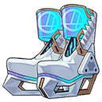
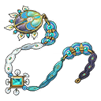

추천 광추
값을 매길 수 없는 건 희망뿐
치명타 확률과 추가 공격 피해·방어력 무시
효과 자세히
치명타 확률 +16%. 치명타 피해 120% 초과 20%마다 추가 공격 피해 +12%(최대 4스택). 전투 진입·일반 공격 후 필살기·추가 공격 방어력 20% 무시(2턴).
동트기 전
치명타 피해와 연속 추가 공격 보강
효과 자세히
치명타 피해 +36%, 스킬·필살기 피해 +18%. 스킬·필살기 후 다음 추가 공격 피해 +48%.
오늘도 평화로운 하루
에너지 상한 기반 피해
효과 자세히
전투 진입 후 에너지 최대치에 따라 가하는 피해가 증가: 에너지 1pt당 0.4% 증가. 최대 160pt까지 계산한다
은하철도의 밤
광역 전투 공격력과 격파 후 피해
효과 자세히
필드에 적이 1기 있을 때마다 공격력이 9% 증가. 해당 효과 최대 중첩수: 5스택. 적의 약점이 격파될 시 가하는 피해가 30% 증가. 지속 1턴
멈추지 않는 연산
공격력과 다수 대상 명중 후 속도
효과 자세히
공격력 +12%. 명중한 적 1기당 공격력 +8%(최대 5스택). 3기 이상 명중 → 속도 +16%(1턴).
추천 유물
별처럼 빛나는 천재 4 · 질주하는 늑대의 도람 왕조 2
- 머리
 주옵션HP부옵션치명타 확률 · 치명타 피해 · 공격력% · 속도
주옵션HP부옵션치명타 확률 · 치명타 피해 · 공격력% · 속도 - 손
 주옵션공격력부옵션치명타 확률 · 치명타 피해 · 공격력% · 속도
주옵션공격력부옵션치명타 확률 · 치명타 피해 · 공격력% · 속도 - 몸통
 주옵션치명타 확률 / 치명타 피해부옵션치명타 확률 (주옵션 제외) · 치명타 피해 (주옵션 제외) · 공격력% · 속도
주옵션치명타 확률 / 치명타 피해부옵션치명타 확률 (주옵션 제외) · 치명타 피해 (주옵션 제외) · 공격력% · 속도 - 다리

주옵션공격력%부옵션치명타 확률 · 치명타 피해 · 속도 - 구체
 주옵션양자 피해 / 공격력%부옵션치명타 확률 · 치명타 피해 · 공격력% (주옵션 제외) · 속도
주옵션양자 피해 / 공격력%부옵션치명타 확률 · 치명타 피해 · 공격력% (주옵션 제외) · 속도 - 매듭
 주옵션공격력%부옵션치명타 확률 · 치명타 피해 · 속도
주옵션공격력%부옵션치명타 확률 · 치명타 피해 · 속도
이 조합을 추천하는 이유
천재와 도람으로 양자 딜러 운용에 맞춥니다.
망국을 애도하는 시인 4 · 질주하는 늑대의 도람 왕조 2
- 머리
 주옵션HP부옵션치명타 확률 · 치명타 피해 · 공격력
주옵션HP부옵션치명타 확률 · 치명타 피해 · 공격력 - 손
 주옵션공격력부옵션치명타 확률 · 치명타 피해
주옵션공격력부옵션치명타 확률 · 치명타 피해 - 몸통
 주옵션치명타 확률 / 치명타 피해부옵션치명타 확률 (주옵션 제외) · 치명타 피해 (주옵션 제외) · 공격력
주옵션치명타 확률 / 치명타 피해부옵션치명타 확률 (주옵션 제외) · 치명타 피해 (주옵션 제외) · 공격력 - 다리
 주옵션공격력%부옵션치명타 확률 · 치명타 피해 · 공격력
주옵션공격력%부옵션치명타 확률 · 치명타 피해 · 공격력 - 구체
주옵션양자 피해 / 공격력%부옵션치명타 확률 · 치명타 피해 · 공격력
- 매듭
주옵션공격력%부옵션치명타 확률 · 치명타 피해 · 공격력
이 조합을 추천하는 이유
공격력 신발과 속도 부옵션 0개로 저속 시인 효과를 받습니다.
재와 뼈마저 불사르는 대공 4 · 주인 없는 황폐한 별 츠가냐 2
- 머리
 주옵션HP부옵션치명타 확률 · 치명타 피해 · 공격력% · 속도
주옵션HP부옵션치명타 확률 · 치명타 피해 · 공격력% · 속도 - 손
 주옵션공격력부옵션치명타 확률 · 치명타 피해 · 공격력% · 속도
주옵션공격력부옵션치명타 확률 · 치명타 피해 · 공격력% · 속도 - 몸통
 주옵션치명타 확률 / 치명타 피해부옵션치명타 확률 (주옵션 제외) · 치명타 피해 (주옵션 제외) · 공격력% · 속도
주옵션치명타 확률 / 치명타 피해부옵션치명타 확률 (주옵션 제외) · 치명타 피해 (주옵션 제외) · 공격력% · 속도 - 다리
 주옵션공격력%부옵션치명타 확률 · 치명타 피해 · 속도
주옵션공격력%부옵션치명타 확률 · 치명타 피해 · 속도 - 구체
 주옵션양자 피해 / 공격력%부옵션치명타 확률 · 치명타 피해 · 공격력% (주옵션 제외) · 속도
주옵션양자 피해 / 공격력%부옵션치명타 확률 · 치명타 피해 · 공격력% (주옵션 제외) · 속도 - 매듭

주옵션공격력%부옵션치명타 확률 · 치명타 피해 · 속도
이 조합을 추천하는 이유
대공과 츠가냐로 다수 적 상대 추가 공격을 강화합니다.
이 정도면 잘 키웠다
선택한 세팅 기준 · —는 확인된 수치 없음
천재와 도람으로 양자 딜러 운용에 맞춥니다.
| 스탯 | 추천 스탯 | 준종결 | 종결 |
|---|---|---|---|
| 공격력 | 3200 | — | 3500 |
| 치명타 확률 | — | — | 82%[1]종결표의 치확 측정 기준은 미기재입니다. |
| 치명타 피해 | 80%[2]특성 치명타 피해 +120% 참고. | — | 160% |
세팅 기준·출처
별도 준종결 목표는 확인되지 않았습니다. 종결 표는 기본적으로 명함·전용 광추 기준입니다. 시트의 일반 권장 치확과 장비별 종결 치확은 측정 조건을 확인할 수 없어 종결 목표만 표기합니다.
공격력 신발과 속도 부옵션 0개로 저속 시인 효과를 받습니다.
| 스탯 | 추천 스탯 | 준종결 | 종결 |
|---|---|---|---|
| 공격력 | 3200 | — | — |
| 치명타 확률 | 100% | — | — |
| 치명타 피해 | 80%[1]특성 치명타 피해 +120% 참고. | — | — |
스탯 조건과 각주
- 치명타 피해 · 추천 스탯 특성 치명타 피해 +120% 참고. ↑
성혼과 추천 돌파
성혼 1은 공격 대상이 적은 전투에서 충전 부족을 보완합니다. 다수전 편성은 명함부터 시작할 수 있습니다.
1추가 공격 피해 +32%·1~2명 타격 시 추가 충전추천
제이드 특성의 추가 공격 피해가 32% 증가. 빚 수금업자 상태를 보유한 캐릭터가 공격 발동 후 명중한 적의 수량이 2/1기일 시 제이드가 충전을 추가로 1/2pt 획득
2전당품 15스택 → 치명타 확률 +18%
전당품이 15스택까지 중첩될 시 제이드의 치명타 확률이 18% 증가
3전투 스킬 +2 · 특성 +2
전투 스킬 +2 · 특성 +2
4필살기 후 방어력 12% 무시(3턴)
필살기 발동 시 제이드가 가하는 피해가 적의 방어력을 12% 무시한다. 지속 3턴
5필살기 +2 · 일반 공격 +1
필살기 +2 · 일반 공격 +1
6수금업자 존재 → 자신도 수금업자·양자 저항 관통 +20%
필드 위에 빚 수금업자 상태인 캐릭터가 있을 시 제이드의 양자 속성 저항 관통이 20% 증가하고, 제이드가 빚 수금업자 상태를 획득
추천 파티


기본 운영과 행적
기본 운영
많은 적을 반복해서 치는 동료를 빚 수금업자로 지정하세요. 지정 대상은 속도가 증가하고 공격 시 HP가 감소합니다. 필살기로 강화한 추가 공격을 새 웨이브에 맞추세요.
행적 우선순위
특성 > 필살기 > 전투 스킬 = 일반 공격. 전당품으로 치명타 피해와 공격력을 높이는 행적을 열어 주세요.
아하 속도 계산기 →